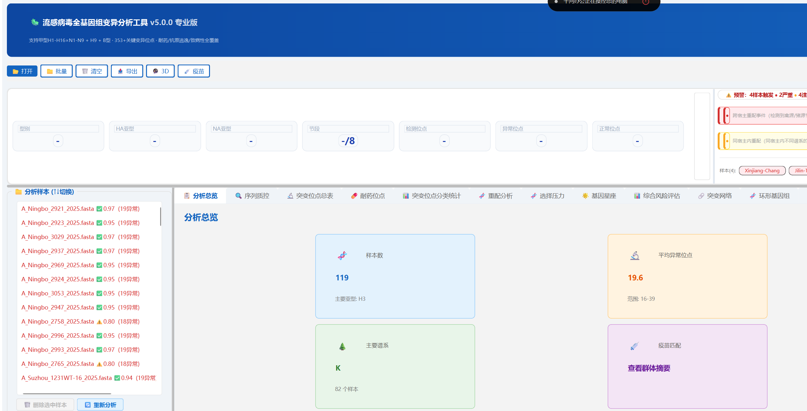
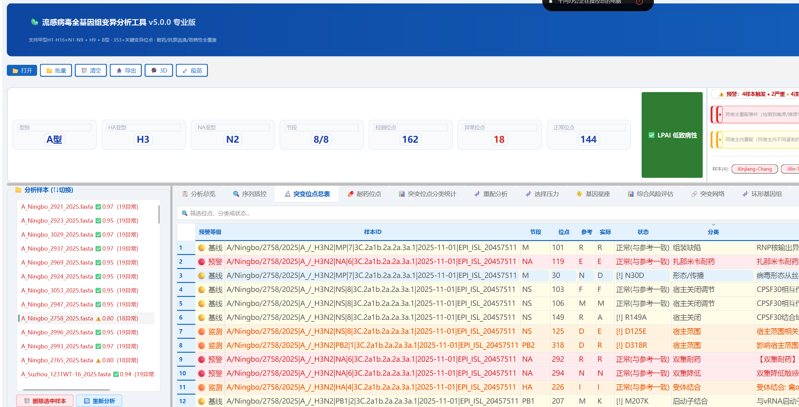
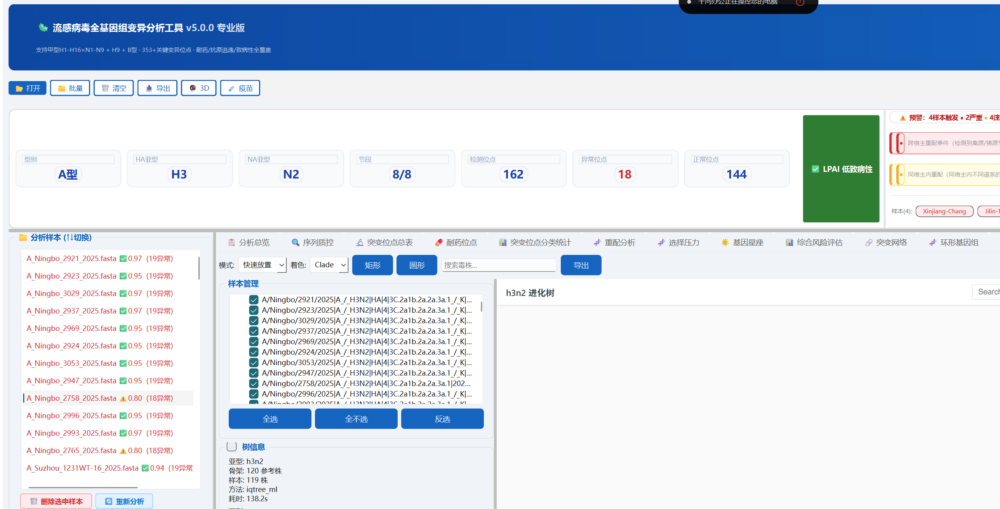
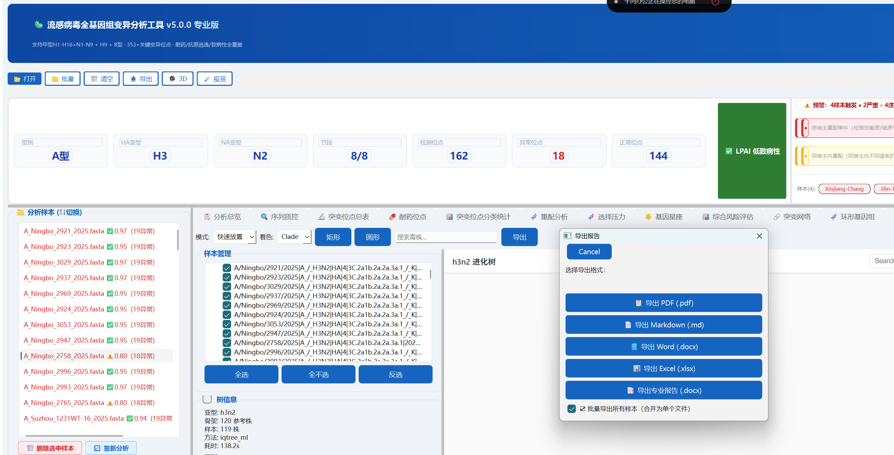

从 FASTA 到专业报告，一个桌面端软件覆盖亚型鉴定、突变检测、耐药分析、重配推断与谱系定位。
FluMutationAnalyzer 面向流感监测与防控一线场景，内置 261+ 关键位点数据库与 178 种基因配方， 支持甲型 H1–H16 × N1–N9 全亚型与 B 型 Victoria/Yamagata，全部计算本地完成，无需上传序列至云端。
从原始序列质控到专业报告导出，每个模块都基于公开的突变位点数据库与代表株参考集， 并针对流感监测与防控一线的实际场景做了大量本地化优化。
以下为软件主界面与关键分析模块的真实运行截图（v5.0.0，119 样本批量分析场景）。




FluMutationAnalyzer 采用持续迭代模式，从 v4.5 系列到 v5.0.0 累计发布 20+ 版本。以下为近期主要更新。
三步即可开始分析。软件为单文件绿色 EXE，无需安装 Python 或配置环境变量。
FluMutationAnalyzer_v5.0.0.exe，双击运行。首次启动会自动释放 Nextclade 数据集到本地 AppData。
FluMutationAnalyzer_v5.0.0.exe # 大小 ~91 MB · 无需安装
Sample_001.fasta Sample_002.fasta ... (拖拽即可)
报告包含： · 封面 + 执行摘要 · 关键位点表格 · 参考文献附录
当前最新版本 v5.0.0 已完成全部功能开发与代码质量审查，正在准备公开发布。 Windows EXE、源代码仓库与培训手册将在权属确认后陆续上线。如需提前体验或合作试用，请通过页脚联系方式与作者沟通。
如在科研工作中使用本软件，建议按下述格式引用；软件内置的位点数据库与参考株来自以下公开资源。
如需在论文或报告中引用本软件，建议使用以下格式：
赵翔. FluMutationAnalyzer: 流感病毒全基因组变异 分析工具 [计算机程序]. 版本 5.0.0. 2026.
英文引用：
Zhao X. FluMutationAnalyzer: A Desktop Tool for Influenza Virus Whole-Genome Mutation Analysis [Computer software]. Version 5.0.0. 2026.
本软件不上传任何用户序列至外部服务器，全部计算在本地完成，符合 GISAID 数据使用条款。